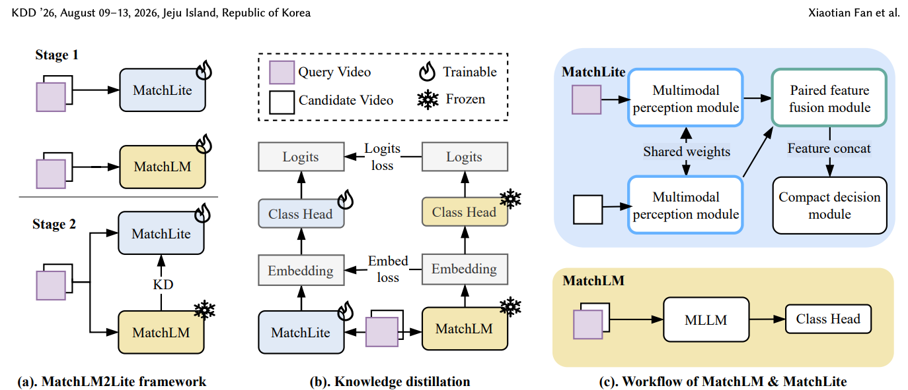

MatchLM2Lite: A Scalable MLLM-to-Lite Framework for Reproduced Content Identification
KDD 2026 · Track 2 · arXiv:2606.14786 · Preprint first submitted 2026/06/10
Abstract
Content moderation is critical for online video platforms to ensure content safety, protect creators, and sustain positive user experiences. Beyond filtering harmful content, platforms must guarantee content authenticity at scale so that users are exposed to diverse, original videos rather than low-value reproductions. We present MatchLM2Lite, a real-time, production-grade reproduced content identification (RCI) system that leverages the powerful understanding of a multimodal large language model (MLLM) distilled into a small and fast-inference model. Our system jointly models video, audio, and text signals, operating on pairs of videos to produce fine-grained reproduction scores. The system comprises two modules, MatchLM and MatchLite, and a two-stage training recipe. First, our high-capacity MLLM, MatchLM, serves as a teacher model to define the upper bound of RCI performance. Its capabilities are then distilled into a compact student model, MatchLite. This design allows MatchLite to deliver low-latency, high-throughput inference on video pairs while preserving much of MatchLM's accuracy, making it suitable for integration into real-time recommendation systems. MatchLM achieves an F1-score improvement of +8.57 compared to our previous production model. After knowledge distillation, MatchLite retains a +6.55 gain in F1-score while reducing computational cost by 35x. Deployed at scale, MatchLM2Lite enables efficient, pairwise multimodal RCI, stably serving online traffic at high queries per second (QPS) with an end-to-end latency below 30 seconds. This system has reduced the reproduced video view rate on our platform by 2.5% without degrading user engagement, demonstrating its effectiveness in a large-scale production environment.
Overview
Distills multimodal reasoning over video, audio and text from a powerful teacher into an efficient production student.

+6.55 F1 · 35× lower compute · 3K+ QPS
Citation
Xiaotian Fan; Hiok Hian Ong; David Yuchen Wang; Zirui Zhu; Kanchan Sarkar; Kun Xu. (2026). MatchLM2Lite: A Scalable MLLM-to-Lite Framework for Reproduced Content Identification. arXiv preprint 2606.14786. https://arxiv.org/abs/2606.14786
BibTeX for the arXiv version:
@misc{matchlm2lite2026,
title = {MatchLM2Lite: A Scalable MLLM-to-Lite Framework for Reproduced Content Identification},
author = {Fan, Xiaotian and Ong, Hiok Hian and Wang, David Yuchen and Zhu, Zirui and Sarkar, Kanchan and Xu, Kun},
year = {2026},
url = {https://arxiv.org/abs/2606.14786},
eprint = {2606.14786},
archivePrefix = {arXiv}
}